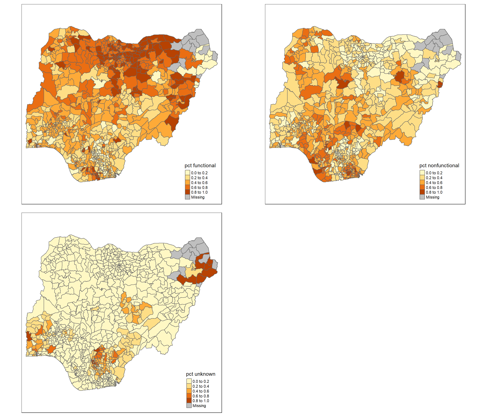
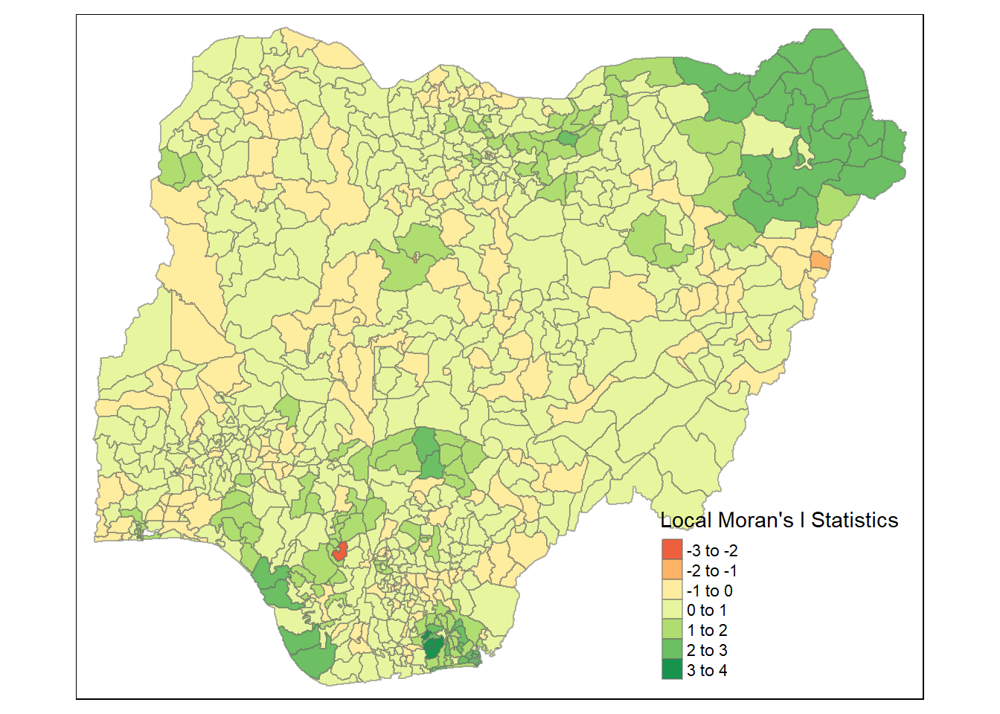
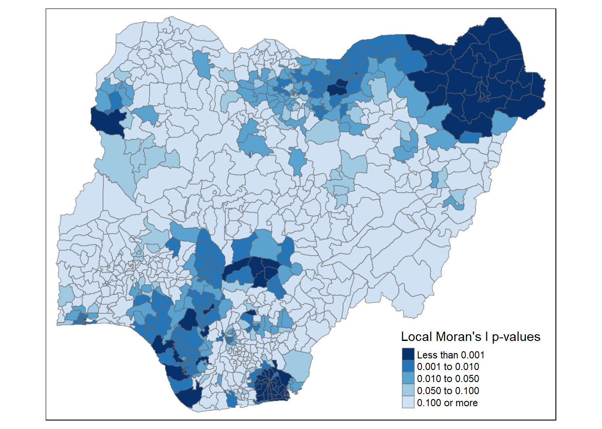
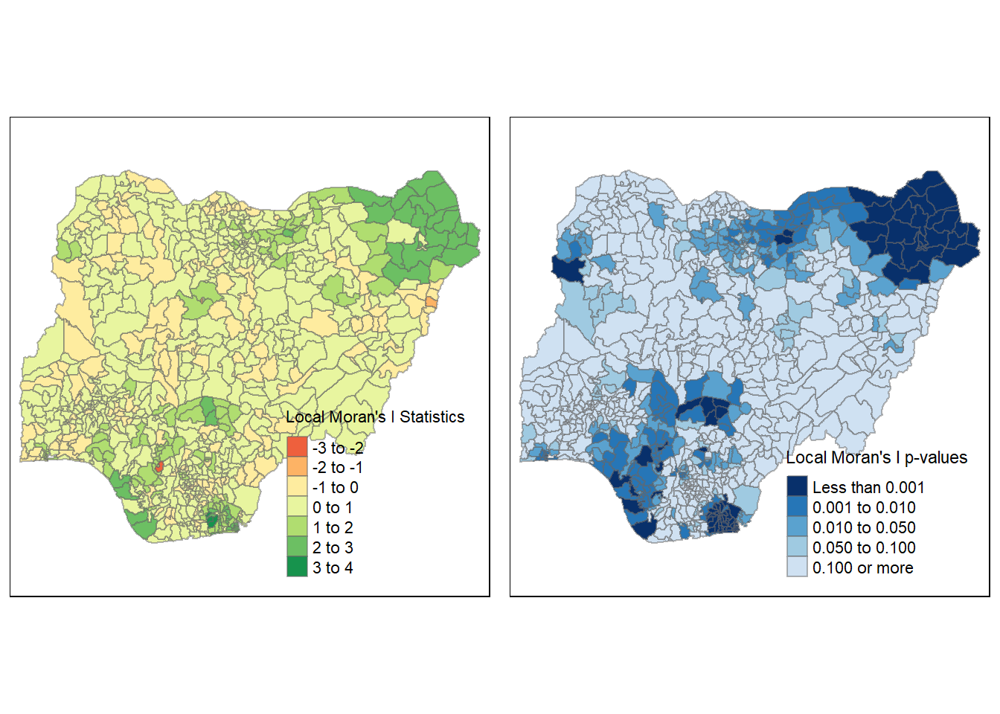
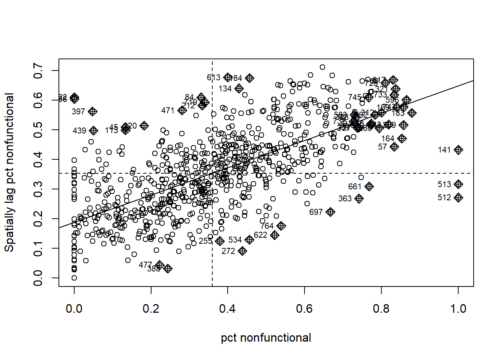
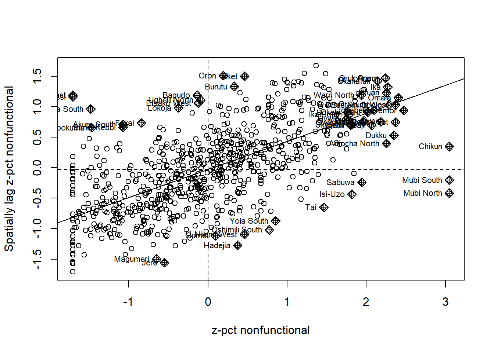
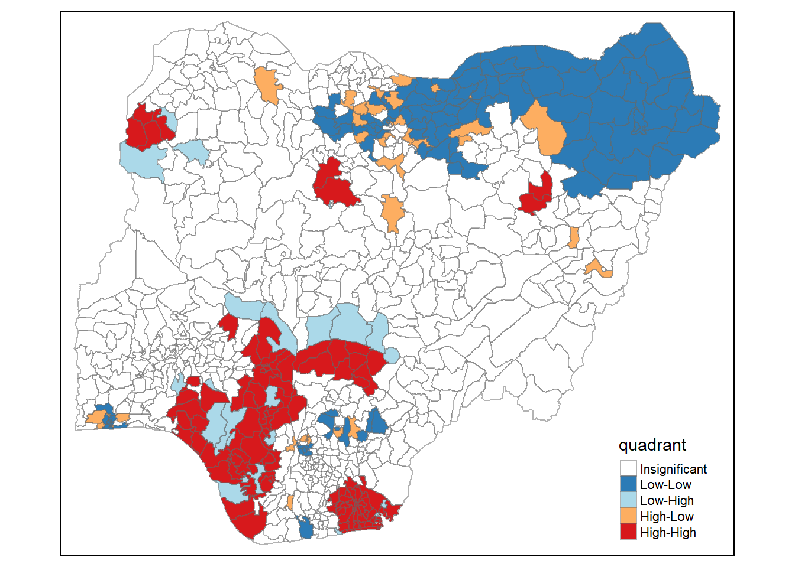
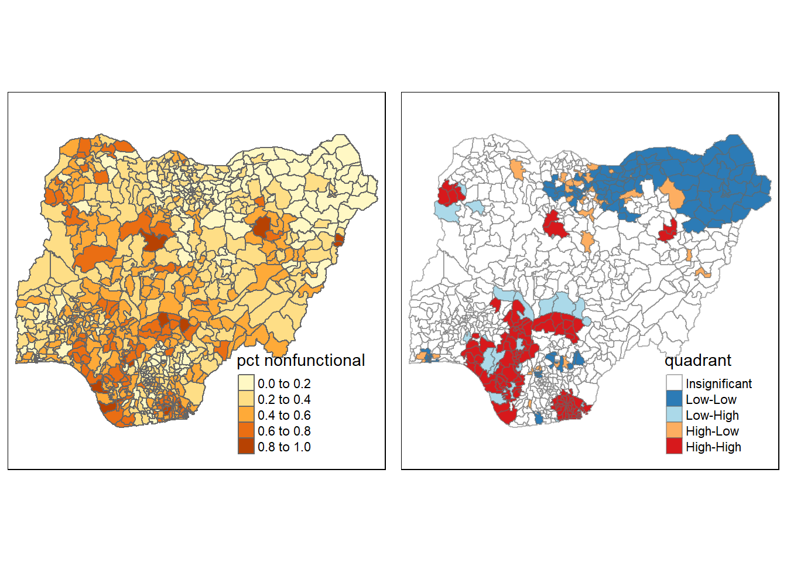
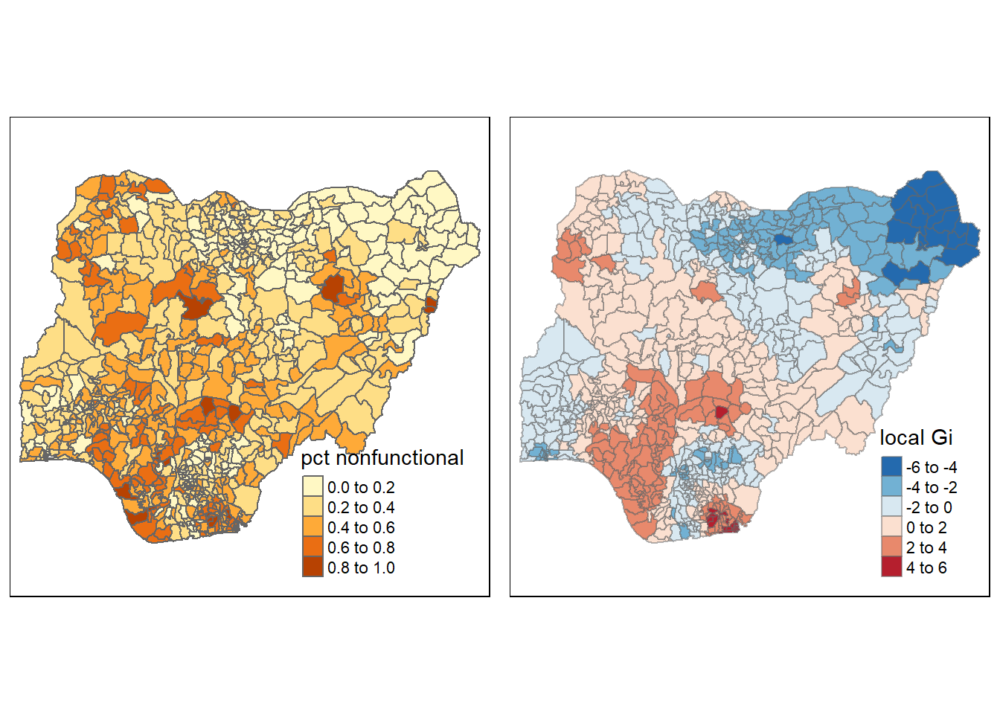

pacman::p_load(sf,tidyverse,spdep,tmap,funModeling)Take-home Exercise 1
Overview
In this take home exercise, we will apply appropriate global and local measures of spatial association techniques to reveal the spatial patterns of Non-Functional water points in Nigeria.
Data Set
Aspatial Data
WPdx+ dataset of Nigeria in csv format was downloaded WPdx (Water Point Data Exchange) Global Data Repositories. The dataset contains water points related data from rural areas at the water point or small water scheme level. The dataset will be re-named as geo_export.csv saved under data/aspatial folder.
Geospatial data
Nigeria Level-2 Administrative Boundary (also known as Local Government Area) polygon features GIS data was downloaded from geoBoundaries portal. The file names were “geoBoundaries-NGA-ADM2” with different file formats and saved under data/geospatial folder.
Getting Started
First, we will install and download relevant packages for this exercises by using p_load() under pacman packages.
sf for importing, managing and processing geospatial data, and
tidyverse for performing data science tasks such as importing, wrangling and visualizing data, and
spdep for computing spatial weights, global and local spatial autocorrelation statistics, and
tmap for preparing cartographic quality choropleth map
funModelling for exploratory data analysis, particularly for the DEA analysis in the later part
Importing data
Importing aspatial data in csv format
Since geo_export data set was downloaded in csv format, read_csv() function is used to read to import geo_export.csv
wp<-read_csv("data/aspatial/geo_export.csv")
glimpse(wp)From the above message, there are in total 95008 observations with 70 columns.
The below code chunks provides the list for wp object:
list(wp)Creating a simple data feature data frame from an aspatial data frame
The below code chunks convert wp data frame into a simple feature data frame (sf object) by using st_as_sf() function of sf packages:
wp_sf<-st_as_sf(wp,coords=c("#lon_deg","#lat_deg"),crs=4326)Things to learn from the above code chunks:
coords argument requires us to provide the column name of x-coordinates followed by the column name of y-coordinates.
crs argument requires us to provide the coordinate system in EPSG format. EPSG 4326 is the WGS84 Geographic Coordinates System.
In order to learn more about the attributes of the newly created sf object, we use the following code chunks:
glimpse(wp_sf)We can also view the coordinates system of wp_sf by using the below code chunks:
st_crs(wp_sf)We then save the extracted data which is (wp_sf) into an output file in rds data format. The output file is called wp_nga.rds and saved under geospatial sub-folder.
write_rds(wp_sf,"data/geospatial/wp_nga.rds")Importing polygon feature data in shapefile format
In the below code chunks, we use st_read() function of sf package to import geoBoundaries-NGA-ADM2 Shapefile into R as a polygon feature data frame. Note that there are 2 arguments used when the input geospatial data is in shapefile format, namely: dsn to define the data path and layer to provide the Shapefile name. Notice that we do not need to indicate file extension.
nga<-st_read(dsn="data/geospatial",layer="geoBoundaries-NGA-ADM2",crs=4326)From the above summary, we learn that the geometry type is Multipolygon. There are in total 774 features and 70 columns.
We can confirm the coordinates system again by using the st_crs() function of sf package.
st_crs(nga)We can use st_geometry() function of sf package to retrieve the basic information on the type of geometry, the geographic extent of the features, and the coordinates system of the data.
st_geometry(nga)We can plot only the geometry of Nigeria using the below code chunk:
plot(st_geometry(nga))However, some of the values under the the column #status_clean,which we need to use in the analysis to identify the working condition of the water points, are NA. Therefore, additional step required to replace NA values to Unknown.
wp_nga<-read_rds("data/geospatial/wp_nga.rds") %>%
mutate(`#status_clean` = replace_na(`#status_clean`,"Unknown"))In the above code chunks, the newly created wp_nga.rds file was read and mutate() function of dplyr package was used to amend those NA values under column #status_clean to Unknown values.
Exploratory Data Analysis (EDA)
We then plot a frequency table based on the column #status_clean using the below code chunk:
freq(data=wp_nga,input="#status_clean")freq() of funModelling package mentioned above is used to generate and format frequency tables from a variable or a table, with percentages and formatting options.
From the above frequency table, we can group those under “Functional”, “Functional but needs repair”,“Functional but not in use” and categorize them as “Functional Water Points”, while those under “Non-Functional”,“Non-Functional due to dry season”,“Abandoned/Decommissioned”,“Abandoned”,“Non functional due to dry season” are categorized as “Non-Functional Water Points”. Keep this in mind for the rest of the analysis.
Geoprocessing with sf package
In this section, we will perform a wide range of geoprocessing with one commonly used geogprocessing functions: point in polygon count.
However, we will need to extract relevant data about the number of water points first under different categories: functional, non-functional and unknown.
Extracting functional water points
In the code chunks below, filter() of dplyr package is used to select functional water points.
wpt_functional <-wp_nga %>%
filter(`#status_clean` %in%
c("Functional","Functional but needs repair","Functional but not in use"))Plotting frequency table of functional water points
freq(data=wpt_functional,input="#status_clean")Extracting non-functional water points
In the code chunks below, filter() of dplyr package is used to select non-functional water points.
wpt_nonfunctional<-wp_nga %>%
filter(`#status_clean` %in%
c("Non-Functional","Non-Functional due to dry season","Abandoned/Decommissioned","Abandoned","Non functional due to dry season"))Plotting frequency table of non-functional water points
freq(data=wpt_nonfunctional,input="#status_clean")Extracting unknown water points
In the code chunks below, filter() of dplyr package is used to select unknown water points.
wpt_unknown<-wp_nga%>%
filter(`#status_clean`=="Unknown")Performing Point-in-Polygon Count
nga_wp<-nga %>%
mutate(`total wpt`=lengths(st_intersects(nga,wp_nga)))%>%
mutate(`wpt functional`=lengths(st_intersects(nga,wpt_functional)))%>%
mutate(`wpt nonfunctional`=lengths(st_intersects(nga,wpt_nonfunctional)))%>%
mutate(`wpt unknown`=lengths(st_intersects(nga,wpt_unknown)))In the above code chunks, these are the below operations done:
First, st_intersects() function helps identify the water points under these 4 categories (set in the previous part): total, functional, non-functional and unknown, respectively in each area unit.
Next, lengths() function of Base R helps calculate the number of water points for each category: total, functional, non-function and unknown that fall into each area unit.
Last, mutate() function helps create the new columns for the newly calculated values and name them as
total wptwpt functionalwpt nonfunctionalwpt unknown.
We can check the summary statistics of the newly derived fields of total wpt wpt functional wpt nonfunctional wpt unknown using the below code chunks:
summary(nga_wp$`wpt functional`)
summary(nga_wp$`wpt nonfunctional`)
summary(nga_wp$`wpt unknown`)Calculating the proportion of number of functional, non-functional and unknown water points to the total number of water points for each area unit
The below code chunks compute the proportion of functional, non-functional and unknown water points to the total number of water points for each area unit. The code chunks also name the newly created fields as pct functional, pct nonfunctional, pct unknown. These fields will be very crucial in our analysis for the rest of the exercise.
nga_wp<-nga_wp%>%
mutate(`pct functional`=`wpt functional`/`total wpt`)%>%
mutate(`pct nonfunctional`=`wpt nonfunctional`/`total wpt`)%>%
mutate(`pct unknown`=`wpt unknown`/`total wpt`)%>%
select(1,3,6:13)
nga_wpDo note that the above select() function selects the relevant fields to keep for further analysis. In this case, we keep ShapeName (column 1), shapeID (column 3), from total wpt column to geometry column (column 6 to 13).
We then use write_rds() function below to create a new data file with a much smaller size of 2.1MB.
write_rds(nga_wp,"data/geospatial/nga_wp.rds")Visualizing the spatial distribution of number of water points
In the below code chunks, we graph a simple map of the spatial distribution of the number of functional, non-functional and unknown water point at LGA level.
nga_wp<-read_rds("data/geospatial/nga_wp.rds")
total<-qtm(nga_wp,"total wpt")
wp_functional<-qtm(nga_wp,"wpt functional")
wp_nonfunctional<-qtm(nga_wp,"wpt nonfunctional")
wp_unknown<-qtm(nga_wp,"wpt unknown")
tmap_arrange(total,wp_functional,wp_nonfunctional,wp_unknown,asp=1,ncol=2)
Visualizing the spatial distribution of water point rates
In the below code chunks, we graph a simple map of the spatial distribution of functional, non-functional and unknown water point rates at LGA level. However, our focus for this exercise will be more on the non-functional water point rate.
pct_functional<-qtm(nga_wp,"pct functional")
pct_nonfunctional<-qtm(nga_wp,"pct nonfunctional")
pct_unknown<-qtm(nga_wp,"pct unknown")
tmap_arrange(pct_functional,pct_nonfunctional,pct_unknown,asp=1,ncol=2)
Notice that there are “Missing values” in all three maps. It was due to NaN values under the corresponding volumes for pct functional, pct nonfunctional, pct unknown as some of the regions do not have any water points at all, thus dividing by 0. More details and further processing will be covered under Distance based weight matrix below.
Determining appropriate weighting scheme to calculate spatial weight matrix
Before computing global spatial autocorrelation statistics, we will need to construct a spatial weights matrix of the area under study. The spatial weights is used to define the neighborhood relationship between geographic units in the study area.
We will then test a few weighting schemes to find out the most appropriate approach for us to compute the spatial weight matrix. We will start with contiguity based approach and move on to distance based approach.
Computing Contiguity Spatial Weights
In the below code chunks, we use poly2nb() function of spdep package to compute contiguity based weight matrices for the study area. This function builds a neighbors list based on regions with contiguous boundaries. The Queen argument in the below code chunks, if TRUE, a single shared boundary meets the contiguity condition, if FALSE, more than one shared point is required; note that more one shared boundary point does not necessarily mean a shared boundary line.
wm_q<-poly2nb(nga_wp,queen=TRUE)
summary(wm_q)Neighbour list object:
Number of regions: 774
Number of nonzero links: 4440
Percentage nonzero weights: 0.7411414
Average number of links: 5.736434
1 region with no links:
86
Link number distribution:
0 1 2 3 4 5 6 7 8 9 10 11 12 14
1 2 14 57 125 182 140 122 72 41 12 4 1 1
2 least connected regions:
138 560 with 1 link
1 most connected region:
508 with 14 linksThe above summary shows that there are 774 area units in Nigeria. The most connected area unit with ID 508 has 14 links while the least connected area units have 1 link. There is also an area unit without any link based on the contiguity based with ID 86.
We can find out the name of the most connected area unit that has links as well as the 14 links’ ID using the below code chunks:
nga_wp$shapeName[508][1] "Mokwa"wm_q[508][[1]]
[1] 20 106 123 171 174 239 402 419 468 471 494 511 644 753In order to find out the name and some info about the “special” region that has no links, we use the below code chunks
nga_wp$shapeName[86][1] "Bakassi"nga_wp[86,]Simple feature collection with 1 feature and 9 fields
Geometry type: MULTIPOLYGON
Dimension: XY
Bounding box: xmin: 8.553504 ymin: 4.798471 xmax: 8.589043 ymax: 4.816385
Geodetic CRS: WGS 84
shapeName shapeID total wpt wpt functional
86 Bakassi NGA-ADM2-72505758B25708171 0 0
wpt nonfunctional wpt unknown pct functional pct nonfunctional pct unknown
86 0 0 NaN NaN NaN
geometry
86 MULTIPOLYGON (((8.580903 4....This seems to be a very interesting observation. Bakassi is a peninsula on the Gulf of Guinea and is famous for being an oil-rich area. It has been a subject of territorial dispute between Cameroon and Nigeria for some years. Under the terms of a 2002 International Court of Justice ruling, the region was awarded to Cameroon. Interestingly, in this analysis, this region was considered part of Nigeria’s territory. This could be because most of the population on Bakassi Peninsula are Nigerians.
More reference about ICJ’s Ruling on Bakassi Territorial Dispute can be found here. https://www.loc.gov/item/global-legal-monitor/2013-08-23/cameroon-nigeria-bakassi-peninsula-transition-completed/
Controversy aside, since there is a region found with no neighbor, we now can consider using distance based weight matrix instead to ensure each region has some links at least.
Distance based Weight Matrix
Transforming from geographic coordinates system EPSG 3426 to projected coordinates system EPSG 26391
Since we want to calculate distance, it is advisable to transform the current WGS84 geographic coordinates system to EPSG 26391 Projected Coordinates System for Nigeria using the below code chunks:
nga_wp26391<-read_rds("data/geospatial/nga_wp.rds")%>%
mutate(`pct functional` = replace_na(`pct functional`,0))%>%
mutate(`pct nonfunctional`=replace_na(`pct nonfunctional`,0))%>%
mutate(`pct unknown`=replace_na(`pct unknown`,0))%>%
st_transform(crs=26391)Besides transforming the coordinates system, the above code chunks also replace NaN values under pct functional, pct nonfunctional and pct unknown to 0 as the total water points for some areas were indeed 0 (i.e There were no water points at all for some regions. Therefore, when calculating rate/proportion, division by 0 would end up with NaN values.)
We can use function st_crs() to confirm if the projected coordinates system is indeed EPSG 26391.
st_crs(nga_wp26391)Coordinate Reference System:
User input: EPSG:26391
wkt:
PROJCRS["Minna / Nigeria West Belt",
BASEGEOGCRS["Minna",
DATUM["Minna",
ELLIPSOID["Clarke 1880 (RGS)",6378249.145,293.465,
LENGTHUNIT["metre",1]]],
PRIMEM["Greenwich",0,
ANGLEUNIT["degree",0.0174532925199433]],
ID["EPSG",4263]],
CONVERSION["Nigeria West Belt",
METHOD["Transverse Mercator",
ID["EPSG",9807]],
PARAMETER["Latitude of natural origin",4,
ANGLEUNIT["degree",0.0174532925199433],
ID["EPSG",8801]],
PARAMETER["Longitude of natural origin",4.5,
ANGLEUNIT["degree",0.0174532925199433],
ID["EPSG",8802]],
PARAMETER["Scale factor at natural origin",0.99975,
SCALEUNIT["unity",1],
ID["EPSG",8805]],
PARAMETER["False easting",230738.26,
LENGTHUNIT["metre",1],
ID["EPSG",8806]],
PARAMETER["False northing",0,
LENGTHUNIT["metre",1],
ID["EPSG",8807]]],
CS[Cartesian,2],
AXIS["(E)",east,
ORDER[1],
LENGTHUNIT["metre",1]],
AXIS["(N)",north,
ORDER[2],
LENGTHUNIT["metre",1]],
USAGE[
SCOPE["Engineering survey, topographic mapping."],
AREA["Nigeria - onshore west of 6°30'E, onshore and offshore shelf."],
BBOX[3.57,2.69,13.9,6.5]],
ID["EPSG",26391]]Deriving the centroids
Since we are working with polygon for this exercise, we will need to get polygon centroids in order to make our connectivity graph. We will need to calculate the centroids using the sf package before moving to plot relevant maps. To do this, we will need to use mapping function. The mapping function applies a given function to each element of a vector and returns a vector of the same length. The input vector will be the geometry column of us.bound. The function will be st_centroid(). We will be using map_dbl variation of map from the purrr package.
To get the longitude values, we map the st_centroid() function over the geometry column of us.bound and access ONLY the longitude values through double bracket operation [[1]]
longitude<-map_dbl(nga_wp26391$geometry,~st_centroid(.x)[[1]])We do the same for latitude. However, we access the second value of each centroid with [[2]].
latitude<-map_dbl(nga_wp26391$geometry,~st_centroid(.x)[[2]])Since we have computed the longitude and latitude, we use cbind() to put longitude and latitude into the same object.
coords<-cbind(longitude,latitude)
head(coords) longitude latitude
[1,] 549364.0 123694.9
[2,] 547123.4 120376.5
[3,] 1189496.9 1059770.9
[4,] 489057.4 534262.6
[5,] 593718.2 113824.1
[6,] 642618.7 251222.3Now we are ready to proceed with our next steps to compute the fixed distance weighting scheme, followed by adaptive distance weighting scheme.
Determine the cut-off distance
First, we need to determine the upper bound for distance band by following the below steps:
Return a matrix with the indices of points belonging to the set of k nearest neighbors of each area unit by using knearneigh() function of spdep package. In this example, we keep the default k=1 to find out the set of 1st nearest neighbors of each area unit.
Convert the knn object returned by the previous function knearneigh() into a list of neighbors of class nb with a list of integers specifying the neighbor IDs by using knn2nb() function of spdep package.
Return the length of neighbor relationship edges by using nbdists() of spdep package. The function returns in the unit of the coordinates if the coordinate system used is projected system. Else it will return in the unit of km.
Remove the list structure of the returned object by using unlist() structure.
Provide summary statistics with min, Q1, median, mean, Q3 and max values accordingly.
Below are the below code chunks that handle all the above mentioned operations:
k1<-knn2nb(knearneigh(coords))
k1dists<-unlist(nbdists(k1,coords))
summary(k1dists) Min. 1st Qu. Median Mean 3rd Qu. Max.
2669 12834 20304 22084 27783 72139 The summary report shows that the largest first nearest neighbor distance is 72139 m. So we use 73000 as the upper bound to ensure that all units have at least one neighbor.
Computing fixed distance weight matrix
Next, we will compute the distance weight matrix by using dnearneigh() with upper bound of 73000 m as shown in the below code chunks:
wm_d73<-dnearneigh(coords,0,73000)
summary(wm_d73)Neighbour list object:
Number of regions: 774
Number of nonzero links: 18486
Percentage nonzero weights: 3.085752
Average number of links: 23.88372
Link number distribution:
1 2 3 4 5 6 7 8 9 10 11 12 13 14 15 16 17 18 19 20 21 22 23 24 25 26
4 9 11 17 35 35 29 28 34 38 28 20 17 27 12 17 7 13 13 13 24 5 12 12 5 15
27 28 29 30 31 32 33 34 35 36 37 38 39 40 41 42 43 44 45 46 47 48 49 50 51 52
12 8 10 12 17 7 5 13 8 8 10 13 17 14 6 9 3 3 3 8 8 11 7 6 2 6
53 54 55 56 57 58 59 60 61 62 63 64 65 66 67 68 72
2 1 4 4 8 3 3 6 2 7 4 8 7 4 1 3 1
4 least connected regions:
90 112 237 670 with 1 link
1 most connected region:
585 with 72 linksFor the above code chunks, dnearneigh() function identifies neighbours of region points by Euclidean distance with a distance band with lower d1= and upper d2= bounds controlled by the bounds= argument. Do take note that since we are using projected coordinate system in this exercise, the “longlat” argument was removed from the dnearneigh() function. How “longlat” argument works is that if unprojected coordinates system is used and either specified in the coordinates object x or with x as a two column matrix and longlat=TRUE, great circle distances in km will be calculated assuming the WGS84 reference ellipsoid. We can display the complete weight matrix by using str() in the below code chunk:
str(wm_d73)List of 774
$ : int [1:64] 2 5 10 25 55 66 68 103 122 181 ...
$ : int [1:62] 1 5 10 25 55 66 68 103 122 181 ...
$ : int [1:2] 261 447
$ : int [1:10] 12 20 257 263 446 454 466 641 690 695
$ : int [1:56] 1 2 55 66 104 136 137 169 184 202 ...
$ : int [1:21] 9 14 18 19 56 170 217 218 330 337 ...
$ : int [1:20] 8 15 22 49 176 177 214 281 282 283 ...
$ : int [1:34] 7 15 22 49 176 177 214 275 276 277 ...
$ : int [1:27] 6 18 19 56 66 77 103 104 217 218 ...
$ : int [1:64] 1 2 23 25 66 103 181 190 191 203 ...
$ : int [1:23] 26 27 43 68 126 157 190 191 204 336 ...
$ : int [1:11] 4 135 257 263 401 417 429 446 454 690 ...
$ : int [1:13] 31 37 38 40 94 211 320 393 436 471 ...
$ : int [1:24] 6 170 193 194 195 217 309 310 311 362 ...
$ : int [1:27] 7 8 22 32 49 51 62 82 176 177 ...
$ : int [1:38] 30 38 39 41 44 45 70 71 120 124 ...
$ : int [1:34] 28 29 35 72 172 173 178 179 182 275 ...
$ : int [1:30] 6 9 19 56 66 77 103 104 217 218 ...
$ : int [1:42] 6 9 18 25 56 66 77 103 104 181 ...
$ : int [1:7] 4 106 239 263 419 454 466
$ : int [1:9] 60 61 162 269 484 520 578 596 626
$ : int [1:32] 7 8 15 32 49 51 62 82 176 177 ...
$ : int [1:64] 10 25 52 53 54 56 58 77 78 79 ...
$ : int [1:5] 123 476 527 673 761
$ : int [1:68] 1 2 10 19 23 54 56 66 77 103 ...
$ : int [1:30] 11 27 43 68 157 190 191 204 336 370 ...
$ : int [1:25] 11 26 43 68 157 191 204 336 370 371 ...
$ : int [1:43] 17 29 35 70 71 124 172 173 178 179 ...
$ : int [1:46] 17 28 35 70 71 120 124 172 173 178 ...
$ : int [1:30] 16 38 39 40 41 44 45 175 185 186 ...
$ : int [1:13] 13 37 94 158 210 211 212 289 308 561 ...
$ : int [1:28] 15 22 49 51 62 82 177 196 207 214 ...
$ : int [1:29] 47 111 130 142 145 155 166 219 227 233 ...
$ : int [1:11] 42 86 104 136 137 213 375 553 559 733 ...
$ : int [1:34] 17 28 29 72 172 173 178 179 182 275 ...
$ : int [1:8] 50 107 247 408 432 455 681 759
$ : int [1:21] 13 31 38 39 40 41 186 192 197 198 ...
$ : int [1:25] 13 16 30 37 39 40 41 44 186 192 ...
$ : int [1:27] 16 30 37 38 40 41 44 185 186 192 ...
$ : int [1:21] 13 30 37 38 39 41 44 186 192 211 ...
$ : int [1:24] 16 30 37 38 39 40 44 45 186 192 ...
$ : int [1:21] 34 86 136 137 184 202 209 285 286 375 ...
$ : int [1:19] 11 26 27 68 122 126 157 190 191 246 ...
$ : int [1:28] 16 30 38 39 40 41 45 70 175 186 ...
$ : int [1:27] 16 30 41 44 70 175 187 188 192 290 ...
$ : int [1:12] 119 380 387 417 423 429 438 459 521 656 ...
$ : int [1:25] 33 111 127 130 155 166 227 234 238 242 ...
$ : int [1:12] 64 65 74 113 131 265 386 407 428 482 ...
$ : int [1:31] 7 8 15 22 32 51 62 82 176 177 ...
$ : int [1:5] 36 98 107 409 432
$ : int [1:27] 15 22 32 49 62 82 177 207 214 284 ...
$ : int [1:48] 23 53 54 57 58 77 78 79 80 165 ...
$ : int [1:38] 23 52 54 57 58 78 79 80 165 189 ...
$ : int [1:59] 23 25 52 53 56 57 58 77 78 79 ...
$ : int [1:34] 1 2 5 68 122 157 169 184 190 203 ...
$ : int [1:51] 6 9 18 19 23 25 54 66 77 78 ...
$ : int [1:35] 52 53 54 58 78 79 80 165 189 197 ...
$ : int [1:38] 23 52 53 54 57 78 79 165 189 197 ...
$ : int [1:5] 128 129 493 700 748
$ : int [1:14] 21 61 158 269 310 311 561 563 578 589 ...
$ : int [1:11] 21 60 162 268 269 484 578 589 592 596 ...
$ : int [1:28] 15 22 32 49 51 82 177 196 207 214 ...
$ : int [1:5] 384 416 467 765 772
$ : int [1:7] 48 65 74 113 131 265 407
$ : int [1:11] 48 64 74 109 113 265 386 407 683 701 ...
$ : int [1:48] 1 2 5 9 10 18 19 25 56 103 ...
$ : int [1:26] 72 120 124 179 182 304 305 339 346 347 ...
$ : int [1:30] 1 2 11 26 27 43 55 122 157 190 ...
$ : int [1:8] 140 146 248 274 473 500 512 513
$ : int [1:44] 16 28 29 44 45 71 120 124 172 173 ...
$ : int [1:50] 16 28 29 70 120 124 172 173 175 178 ...
$ : int [1:20] 17 35 67 182 348 361 374 378 404 566 ...
$ : int [1:6] 361 374 377 404 665 666
$ : int [1:15] 48 64 65 109 113 116 251 265 672 683 ...
$ : int [1:15] 110 229 255 258 272 373 382 398 422 433 ...
$ : int [1:9] 254 287 427 459 470 547 647 677 751
$ : int [1:60] 9 18 19 23 25 52 54 56 78 79 ...
$ : int [1:52] 23 52 53 54 56 57 58 77 79 80 ...
$ : int [1:57] 23 52 53 54 56 57 58 77 78 80 ...
$ : int [1:41] 23 52 53 54 57 77 78 79 165 189 ...
$ : int [1:20] 99 145 156 227 233 242 255 270 426 449 ...
$ : int [1:21] 15 22 32 49 51 62 177 207 214 297 ...
$ : int [1:6] 132 258 383 414 529 767
$ : int [1:3] 148 437 692
$ : int [1:39] 101 105 130 142 145 155 156 219 235 242 ...
$ : int [1:17] 34 42 136 137 184 202 285 286 499 538 ...
$ : int [1:19] 147 149 151 221 226 245 267 399 410 415 ...
$ : int [1:5] 150 489 648 700 714
$ : int [1:12] 100 107 159 260 408 458 463 542 674 676 ...
$ : int 237
$ : int [1:3] 160 271 406
$ : int [1:11] 95 119 390 391 392 423 487 642 656 668 ...
$ : int [1:3] 354 607 665
$ : int [1:7] 13 31 158 436 561 596 709
$ : int [1:10] 92 390 391 392 405 423 469 656 708 770
$ : int [1:17] 97 108 139 167 168 350 389 403 412 420 ...
$ : int [1:14] 96 108 114 139 147 168 389 403 412 420 ...
$ : int [1:5] 50 153 231 432 696
$ : int [1:18] 81 145 154 167 227 233 255 270 426 449 ...
[list output truncated]
- attr(*, "class")= chr "nb"
- attr(*, "region.id")= chr [1:774] "1" "2" "3" "4" ...
- attr(*, "call")= language dnearneigh(x = coords, d1 = 0, d2 = 73000)
- attr(*, "dnn")= num [1:2] 0 73000
- attr(*, "bounds")= chr [1:2] "GE" "LE"
- attr(*, "nbtype")= chr "distance"
- attr(*, "sym")= logi TRUENext, nb2listw() is used to convert th nb object into spatial weights object.
wm73_lw<-nb2listw(wm_d73,style="W")
summary(wm73_lw)Characteristics of weights list object:
Neighbour list object:
Number of regions: 774
Number of nonzero links: 18486
Percentage nonzero weights: 3.085752
Average number of links: 23.88372
Link number distribution:
1 2 3 4 5 6 7 8 9 10 11 12 13 14 15 16 17 18 19 20 21 22 23 24 25 26
4 9 11 17 35 35 29 28 34 38 28 20 17 27 12 17 7 13 13 13 24 5 12 12 5 15
27 28 29 30 31 32 33 34 35 36 37 38 39 40 41 42 43 44 45 46 47 48 49 50 51 52
12 8 10 12 17 7 5 13 8 8 10 13 17 14 6 9 3 3 3 8 8 11 7 6 2 6
53 54 55 56 57 58 59 60 61 62 63 64 65 66 67 68 72
2 1 4 4 8 3 3 6 2 7 4 8 7 4 1 3 1
4 least connected regions:
90 112 237 670 with 1 link
1 most connected region:
585 with 72 links
Weights style: W
Weights constants summary:
n nn S0 S1 S2
W 774 599076 774 126.9629 3125.191From the above summary, each area unit has around 23.88 neighbors on average if we cap the upper d2= bound as 73000. Notice that most connected region has 72 links. This is an insanely big number. As seen in the map, Nigeria is densely settled with many small area units in some regions. This method therefore shows a major drawback as it masks subtle local variations and smooths out any variations if the one area has too many neighbors.
Therefore, in this case, we will also consider adaptive weighting schemes to limit the number of neighbors. This may prove to be more superior in the case of Nigeria as this scheme can adjust itself according to the density of the data.
Computing adaptive distance weight matrix
In the below code chunks, we control the number of neighbors directly using k-nearest neighbors, either accepting asymmetric neighbors or imposing symmetry. In this exercise, we can start with k=8.
knn<-knn2nb(knearneigh(coords,k=8))
knnNeighbour list object:
Number of regions: 774
Number of nonzero links: 6192
Percentage nonzero weights: 1.033592
Average number of links: 8
Non-symmetric neighbours listFrom the above table summary, we can see that each area unit has exactly 8 neighbors, no more no less!
Next, in the below code chunk, we create a row standardized spatial weight matrix in “W” style using the nb2listw() function. The reason why we should chose “W” over “B” was because the spatially lagged variable in this case is proportion/rate, which should be capped at 1. If “B” was used, spatially lagged variables pct nonfunctional in the later parts may end up larger than 1, which does not make any sense for proportion/rate.
knn_lw<-nb2listw(knn,style="W")
summary(knn_lw)Characteristics of weights list object:
Neighbour list object:
Number of regions: 774
Number of nonzero links: 6192
Percentage nonzero weights: 1.033592
Average number of links: 8
Non-symmetric neighbours list
Link number distribution:
8
774
774 least connected regions:
1 2 3 4 5 6 7 8 9 10 11 12 13 14 15 16 17 18 19 20 21 22 23 24 25 26 27 28 29 30 31 32 33 34 35 36 37 38 39 40 41 42 43 44 45 46 47 48 49 50 51 52 53 54 55 56 57 58 59 60 61 62 63 64 65 66 67 68 69 70 71 72 73 74 75 76 77 78 79 80 81 82 83 84 85 86 87 88 89 90 91 92 93 94 95 96 97 98 99 100 101 102 103 104 105 106 107 108 109 110 111 112 113 114 115 116 117 118 119 120 121 122 123 124 125 126 127 128 129 130 131 132 133 134 135 136 137 138 139 140 141 142 143 144 145 146 147 148 149 150 151 152 153 154 155 156 157 158 159 160 161 162 163 164 165 166 167 168 169 170 171 172 173 174 175 176 177 178 179 180 181 182 183 184 185 186 187 188 189 190 191 192 193 194 195 196 197 198 199 200 201 202 203 204 205 206 207 208 209 210 211 212 213 214 215 216 217 218 219 220 221 222 223 224 225 226 227 228 229 230 231 232 233 234 235 236 237 238 239 240 241 242 243 244 245 246 247 248 249 250 251 252 253 254 255 256 257 258 259 260 261 262 263 264 265 266 267 268 269 270 271 272 273 274 275 276 277 278 279 280 281 282 283 284 285 286 287 288 289 290 291 292 293 294 295 296 297 298 299 300 301 302 303 304 305 306 307 308 309 310 311 312 313 314 315 316 317 318 319 320 321 322 323 324 325 326 327 328 329 330 331 332 333 334 335 336 337 338 339 340 341 342 343 344 345 346 347 348 349 350 351 352 353 354 355 356 357 358 359 360 361 362 363 364 365 366 367 368 369 370 371 372 373 374 375 376 377 378 379 380 381 382 383 384 385 386 387 388 389 390 391 392 393 394 395 396 397 398 399 400 401 402 403 404 405 406 407 408 409 410 411 412 413 414 415 416 417 418 419 420 421 422 423 424 425 426 427 428 429 430 431 432 433 434 435 436 437 438 439 440 441 442 443 444 445 446 447 448 449 450 451 452 453 454 455 456 457 458 459 460 461 462 463 464 465 466 467 468 469 470 471 472 473 474 475 476 477 478 479 480 481 482 483 484 485 486 487 488 489 490 491 492 493 494 495 496 497 498 499 500 501 502 503 504 505 506 507 508 509 510 511 512 513 514 515 516 517 518 519 520 521 522 523 524 525 526 527 528 529 530 531 532 533 534 535 536 537 538 539 540 541 542 543 544 545 546 547 548 549 550 551 552 553 554 555 556 557 558 559 560 561 562 563 564 565 566 567 568 569 570 571 572 573 574 575 576 577 578 579 580 581 582 583 584 585 586 587 588 589 590 591 592 593 594 595 596 597 598 599 600 601 602 603 604 605 606 607 608 609 610 611 612 613 614 615 616 617 618 619 620 621 622 623 624 625 626 627 628 629 630 631 632 633 634 635 636 637 638 639 640 641 642 643 644 645 646 647 648 649 650 651 652 653 654 655 656 657 658 659 660 661 662 663 664 665 666 667 668 669 670 671 672 673 674 675 676 677 678 679 680 681 682 683 684 685 686 687 688 689 690 691 692 693 694 695 696 697 698 699 700 701 702 703 704 705 706 707 708 709 710 711 712 713 714 715 716 717 718 719 720 721 722 723 724 725 726 727 728 729 730 731 732 733 734 735 736 737 738 739 740 741 742 743 744 745 746 747 748 749 750 751 752 753 754 755 756 757 758 759 760 761 762 763 764 765 766 767 768 769 770 771 772 773 774 with 8 links
774 most connected regions:
1 2 3 4 5 6 7 8 9 10 11 12 13 14 15 16 17 18 19 20 21 22 23 24 25 26 27 28 29 30 31 32 33 34 35 36 37 38 39 40 41 42 43 44 45 46 47 48 49 50 51 52 53 54 55 56 57 58 59 60 61 62 63 64 65 66 67 68 69 70 71 72 73 74 75 76 77 78 79 80 81 82 83 84 85 86 87 88 89 90 91 92 93 94 95 96 97 98 99 100 101 102 103 104 105 106 107 108 109 110 111 112 113 114 115 116 117 118 119 120 121 122 123 124 125 126 127 128 129 130 131 132 133 134 135 136 137 138 139 140 141 142 143 144 145 146 147 148 149 150 151 152 153 154 155 156 157 158 159 160 161 162 163 164 165 166 167 168 169 170 171 172 173 174 175 176 177 178 179 180 181 182 183 184 185 186 187 188 189 190 191 192 193 194 195 196 197 198 199 200 201 202 203 204 205 206 207 208 209 210 211 212 213 214 215 216 217 218 219 220 221 222 223 224 225 226 227 228 229 230 231 232 233 234 235 236 237 238 239 240 241 242 243 244 245 246 247 248 249 250 251 252 253 254 255 256 257 258 259 260 261 262 263 264 265 266 267 268 269 270 271 272 273 274 275 276 277 278 279 280 281 282 283 284 285 286 287 288 289 290 291 292 293 294 295 296 297 298 299 300 301 302 303 304 305 306 307 308 309 310 311 312 313 314 315 316 317 318 319 320 321 322 323 324 325 326 327 328 329 330 331 332 333 334 335 336 337 338 339 340 341 342 343 344 345 346 347 348 349 350 351 352 353 354 355 356 357 358 359 360 361 362 363 364 365 366 367 368 369 370 371 372 373 374 375 376 377 378 379 380 381 382 383 384 385 386 387 388 389 390 391 392 393 394 395 396 397 398 399 400 401 402 403 404 405 406 407 408 409 410 411 412 413 414 415 416 417 418 419 420 421 422 423 424 425 426 427 428 429 430 431 432 433 434 435 436 437 438 439 440 441 442 443 444 445 446 447 448 449 450 451 452 453 454 455 456 457 458 459 460 461 462 463 464 465 466 467 468 469 470 471 472 473 474 475 476 477 478 479 480 481 482 483 484 485 486 487 488 489 490 491 492 493 494 495 496 497 498 499 500 501 502 503 504 505 506 507 508 509 510 511 512 513 514 515 516 517 518 519 520 521 522 523 524 525 526 527 528 529 530 531 532 533 534 535 536 537 538 539 540 541 542 543 544 545 546 547 548 549 550 551 552 553 554 555 556 557 558 559 560 561 562 563 564 565 566 567 568 569 570 571 572 573 574 575 576 577 578 579 580 581 582 583 584 585 586 587 588 589 590 591 592 593 594 595 596 597 598 599 600 601 602 603 604 605 606 607 608 609 610 611 612 613 614 615 616 617 618 619 620 621 622 623 624 625 626 627 628 629 630 631 632 633 634 635 636 637 638 639 640 641 642 643 644 645 646 647 648 649 650 651 652 653 654 655 656 657 658 659 660 661 662 663 664 665 666 667 668 669 670 671 672 673 674 675 676 677 678 679 680 681 682 683 684 685 686 687 688 689 690 691 692 693 694 695 696 697 698 699 700 701 702 703 704 705 706 707 708 709 710 711 712 713 714 715 716 717 718 719 720 721 722 723 724 725 726 727 728 729 730 731 732 733 734 735 736 737 738 739 740 741 742 743 744 745 746 747 748 749 750 751 752 753 754 755 756 757 758 759 760 761 762 763 764 765 766 767 768 769 770 771 772 773 774 with 8 links
Weights style: W
Weights constants summary:
n nn S0 S1 S2
W 774 599076 774 174.2812 3155.312knn_lwCharacteristics of weights list object:
Neighbour list object:
Number of regions: 774
Number of nonzero links: 6192
Percentage nonzero weights: 1.033592
Average number of links: 8
Non-symmetric neighbours list
Weights style: W
Weights constants summary:
n nn S0 S1 S2
W 774 599076 774 174.2812 3155.312For the rest of the analysis, we will be using adaptive distance weight matrix as the distribution of data varies across our study area.
Global Spatial Autocorrelation: Moran’s I
Moran’s I test
The below code chunks perform Moran’s I statistics calculation by using moran.test() function of spdep package.
moran.test(nga_wp26391$`pct nonfunctional`,listw=knn_lw,zero.policy = TRUE,na.action=na.omit)
Moran I test under randomisation
data: nga_wp26391$`pct nonfunctional`
weights: knn_lw
Moran I statistic standard deviate = 27.282, p-value < 2.2e-16
alternative hypothesis: greater
sample estimates:
Moran I statistic Expectation Variance
0.4613882839 -0.0012936611 0.0002876085 From the above summary table, we can see that Moran’s I (Z-value) of 0.46 is positive, which means observations tend to be clustered and similar.
We can also conduct a permutation test for Moran’s I statistics by using moran.mc() of spdep. A total of 1000 simulations will be performed.
set.seed(1234)
bperm<-moran.mc(nga_wp26391$`pct nonfunctional`,listw=knn_lw,nsim=999,zero.policy=TRUE,na.action=na.omit)
bperm
Monte-Carlo simulation of Moran I
data: nga_wp26391$`pct nonfunctional`
weights: knn_lw
number of simulations + 1: 1000
statistic = 0.46139, observed rank = 1000, p-value = 0.001
alternative hypothesis: greaterFrom the output above, using Monte-Carlo simulation of Moran’s I with 1000 observation, the statistics of 0.46 is somehow similar to our findings when calculating the global Moran’s I statistics above. The area units are clustered and observations tend to be similar.
Geary’s c
We can also consider Geary’s c test in our analysis.
The code chunks below performs Geary’s c test for spatial autocorrelation by using geary.test() function of spdep package.
geary.test(nga_wp26391$`pct nonfunctional`,listw=knn_lw)
Geary C test under randomisation
data: nga_wp26391$`pct nonfunctional`
weights: knn_lw
Geary C statistic standard deviate = 26.256, p-value < 2.2e-16
alternative hypothesis: Expectation greater than statistic
sample estimates:
Geary C statistic Expectation Variance
0.526234882 1.000000000 0.000325599 From the above table summary, we can see that Geary c statistics (z-value) is 0.526234882, which is less than 1. We conclude that the area units are clustered and observations tend to be similar.
We can also perform Monte-Carlo simulation of Geary’s c test with 1000 observations with the below code chunks:
set.seed(1234)
bperm<-geary.mc(nga_wp26391$`pct nonfunctional`,listw=knn_lw,nsim=999)
bperm
Monte-Carlo simulation of Geary C
data: nga_wp26391$`pct nonfunctional`
weights: knn_lw
number of simulations + 1: 1000
statistic = 0.52623, observed rank = 1, p-value = 0.001
alternative hypothesis: greaterThe output for both the Geary’s c Test and Monte-Carlo simulation are both similar. Both shows that there were clusters and observations tend to be similar.
We notice that both Moran’s I Statistics and Geary’s c statistics yield the same conclusion. C approaches 0 and I approaches 1 when similar values are clustered.
Cluster and Outlier Analysis
Local Indicators of Spatial Association or LISA in short are statistics that evaluate the existence of clusters and/or outliers in the spatial arrangement of a given variable. In this section, we will apply appropriate LISA, especially local Moran’s I to detect clusters and/or outliers on the proportion of number of non-functional water points to the total number of water points in Nigeria.
Computing local Moran’s I
The function localmoran() of spdep package is used to calculate the local Moran’s I statistics. It computes Ii values, given a set of zi values and a listw object (in this case, knn_lw)
fips<-order(nga_wp26391$shapeName)
localMI<-localmoran(nga_wp26391$`pct nonfunctional`,knn_lw)
head(localMI) Ii E.Ii Var.Ii Z.Ii Pr(z != E(Ii))
1 0.6758946 -0.0008481017 0.08124087 2.374304 1.758207e-02
2 0.6206028 -0.0005236472 0.05017720 2.772853 5.556728e-03
3 2.9220515 -0.0037801442 0.36104279 4.869339 1.119723e-06
4 0.2169765 -0.0016485516 0.15779059 0.550376 5.820615e-01
5 0.8924913 -0.0007647464 0.07326225 3.300166 9.662752e-04
6 0.5741337 -0.0009383859 0.08988120 1.918173 5.508904e-02localmoran() function returns a matrix of values whose columns are:
Ii: the local Moran’s I statistics
E.Ii: the expectation of local Moran’s I statistics under the randomization hypothesis
Var.Ii: the variance of local Moran’s I statistics under the randomization hypothesis
Z.Ii: the standard deviate of local Moran’s I statistics
Pr(): the p-value of local Moran’s I statistics
Mapping the local Moran’s I statistics
Before mapping the local Moran’s I map, we will need to append the local Moran’s I dataframe (i.e. localMI) onto the nga_wp26391 SpatialPolygonDataFrame. The ouput SpatialPolygonDataFrame will then be called nga.localMI. The code chunks below perform the task:
nga.localMI<-cbind(nga_wp26391,localMI)%>%
rename(Pr.Ii=Pr.z....E.Ii..)Mapping local Moran’s I statistics
We can plot the local Moran’s I statistics using choropleth mapping functions of tmap package in the below code chunks:
tm_shape(nga.localMI)+
tm_fill(col="Ii",style="pretty",title="Local Moran's I Statistics")+
tm_borders(alpha=0.5)
Mapping local Moran’s I p-values
The code chunks below produce a choropleth map of Moran’s I p-values by using functions of tmap package:
tm_shape(nga.localMI)+
tm_fill(col="Pr.Ii",breaks=c(-Inf,0.001,0.01,0.05,0.1,Inf),palette="-Blues",title="Local Moran's I p-values")+
tm_borders(alpha=0.5)
Mapping both local Moran’s I statistics and p-values
For effective interpretation, we can plot both Moran’s I statistics and its corresponding p-values maps side by side using the below code chunks.
localMI.map<-tm_shape(nga.localMI)+
tm_fill(col="Ii",style="pretty",title="Local Moran's I Statistics")+
tm_borders(alpha=0.5)
pvalue.map<-tm_shape(nga.localMI)+
tm_fill(col="Pr.Ii",breaks=c(-Inf,0.001,0.01,0.05,0.1,Inf),palette="-Blues",title="Local Moran's I p-values")+
tm_borders(alpha=0.5)
tmap_arrange(localMI.map,pvalue.map,asp=1,ncol=2)
Interpretation of Local Moran’s statistics
If the p-value for the feature is small enough to be considered statistically significant and local MI statistics are positive if location i is associated with relatively high values of the surrounding area, the location is a cluster.
If the p-value for the feature is small enough to be considered statistically significant and local MI statistics are negative if location i is associated with relatively low values of the surrounding area, the location is an outlier.
Creating a LISA Cluster Map
Plotting Moran scatterplot
nci<-moran.plot(nga_wp26391$`pct nonfunctional`,knn_lw,xlab="pct nonfunctional",ylab="Spatially lag pct nonfunctional")
The slope of the linear regression of the lagged variable of pct non-functional versus the original pct non-functional is equivalent to the Moran’s I score.
Plotting Moran scatterplot with standardized variable
First we will use scale() function to center and scale the the variable. Centering is done by subtracting the column means (omitting NA) of x from their corresponding columns. Scaling is done by dividing (centered) columns of x by their standard deviations.
nga_wp26391$Z.pct_nonfunctional <- scale(nga_wp26391$`pct nonfunctional`)%>%
as.vectorAs.vector() function ensures that the output’s data type is a vector which can map into our dataframe.
We will then proceed to plot the Moran scatterplot again by using the below code chunks:
nci2<-moran.plot(nga_wp26391$Z.pct_nonfunctional,knn_lw,labels=as.character(nga_wp26391$shapeName),xlab="z-pct nonfunctional",ylab="Spatially lag z-pct nonfunctional")
Preparing LISA map classes
The code chunks below show the step to prepare a LISA map
quadrant<-vector(mode="numeric",length=nrow(localMI))Next, we derive the spatially lagged variable (i.e. pct nonfunctional) and center the spatially lagged variable around its mean.
nga_wp26391$lag_pct_nonfunctional<-lag.listw(knn_lw,nga_wp26391$`pct nonfunctional`)
DV<-nga_wp26391$lag_pct_nonfunctional-mean(nga_wp26391$lag_pct_nonfunctional)This will be followed by centering the local Moran’s I around its mean.
LM_I<-localMI[,1]-mean(localMI[,1])We also need to set significant level for the local Moran’s I statistics:
signif<-0.05These four command lines define low-low (1st quadrant), low-high (2nd quadrant), high-low (3rd quadrant), high-high (4th quadrant):
quadrant[DV<0 & LM_I>0]<-1
quadrant[DV>0 & LM_I<0]<-2
quadrant[DV<0 & LM_I<0]<-3
quadrant[DV>0 & LM_I>0]<-4We will then place all those insignificant Moran in the quadrant 0.
quadrant[localMI[,5]>signif]<-0We combine all the above codes in the below code chunks as shown below:
quadrant<-vector(mode="numeric",length=nrow(localMI))
nga_wp26391$lag_pct_nonfunctional<-lag.listw(knn_lw,nga_wp26391$`pct nonfunctional`)
DV<-nga_wp26391$lag_pct_nonfunctional-mean(nga_wp26391$lag_pct_nonfunctional)
LM_I<-localMI[,1]-mean(localMI[,1])
signif<-0.05
quadrant[DV<0 & LM_I>0]<-1
quadrant[DV>0 & LM_I<0]<-2
quadrant[DV<0 & LM_I<0]<-3
quadrant[DV>0 & LM_I>0]<-4
quadrant[localMI[,5]>signif]<-0Plotting LISA Map
We can build a LISA map by using the below code chunks:
nga.localMI$quadrant<-quadrant
colors<-c("#ffffff", "#2c7bb6", "#abd9e9", "#fdae61", "#d7191c")
clusters<-c("Insignificant", "Low-Low", "Low-High", "High-Low", "High-High")
tm_shape(nga.localMI)+
tm_fill(col="quadrant",style="cat",palette=colors[c(sort(unique(quadrant)))+1],labels=clusters[c(sort(unique(quadrant)))+1],popup.vars = c(""))+
tm_view(set.zoom.limits = c(11,17))+tm_borders(alpha=0.5)
For effective interpretation, we plot both the thematic map by pct nonfunctional and the LISA map side by side.
pct_nonfunctional<-qtm(nga_wp26391,"pct nonfunctional")
nga.localMI$quadrant<-quadrant
colors<-c("#ffffff", "#2c7bb6", "#abd9e9", "#fdae61", "#d7191c")
clusters<-c("Insignificant", "Low-Low", "Low-High", "High-Low", "High-High")
LISAmap<-tm_shape(nga.localMI)+
tm_fill(col="quadrant",style="cat",palette=colors[c(sort(unique(quadrant)))+1],labels=clusters[c(sort(unique(quadrant)))+1],popup.vars = c(""))+
tm_view(set.zoom.limits = c(11,17))+tm_borders(alpha=0.5)
tmap_arrange(pct_nonfunctional,LISAmap,asp=1,ncol=2)
From the LISA cluster plots, we notice that significant classification appears in all four quadrants: Low-Low, Low-High, High-Low and High-High . However there was one big limitation that NA values have been masked as 0. For some areas, having no non-functional water points or 0% rate of non-functional water points was in fact due to having no water points at all, not because the maintenance of water points were excellent in those regions.
Hot Spot and Cold Spot Analysis
Besides detecting clusters and outliers, local spatial statistics can also be used to detect hot spots and cold spots.
Since we choose the distance based spatial weights method over the contiguity based spatial weights, we can explore the option to use Getis and Ord’s G-Statistics to detect other spatial abnormalities. This statistics looks at neighbors within a defined proximity to identify where either statistically significant high or low clusters spatially. Here, the statistically significant hot spots are recognized as areas of high proportion of non-functional water points where other areas within their neighborhood range also share high values of non-functional water point rate.
Gi statistics using adaptive distance
The below code chunks compute the GI statistics based on adaptive distance spatial weight matrix.
fips<-order(nga_wp26391$shapeName)
gi.adaptive<-localG(nga_wp26391$`pct nonfunctional`,knn_lw)
gi.adaptive [1] 2.374303998 2.772852644 -4.869338828 0.550375967 3.300166403
[6] -1.918173288 -1.162901369 -1.014522250 -0.430477172 0.171685244
[11] 0.132585130 -0.028991233 2.665262882 -0.501305940 -2.091233562
[16] -0.459734611 -1.413676386 -0.037722987 -0.726580453 -0.155012340
[21] 3.748629533 -2.908993368 -1.779361638 1.747339784 0.640239850
[26] -2.022338545 0.506028678 0.911818009 -0.905274894 -0.543447781
[31] 3.056250463 -3.148256782 -2.757071737 1.696116531 -1.135547565
[36] 1.395691479 2.395479078 1.087862667 0.720302212 1.146769559
[41] 0.231244309 2.414053900 -0.829644101 0.325926693 2.016115264
[46] 0.631731771 -2.878594146 1.504218840 -3.134925107 0.986433120
[51] -3.012905091 -1.950482789 -0.515354445 -2.456553981 0.983092852
[56] -1.063237779 1.142578459 -0.219806501 -0.348868121 3.473610973
[61] 4.400951792 -2.942366219 -0.086621764 1.349787937 0.748079750
[66] 1.728984394 0.679313176 -1.901922242 0.375562029 1.660566938
[71] 0.690026158 -0.904642723 -1.154580270 1.243397778 -3.055785419
[76] 0.878271333 -1.903086667 -0.568097299 -1.608134988 -0.939223207
[81] -2.218725332 -1.817199151 -3.014709556 3.381321517 -2.736012201
[86] 3.300706384 -1.071196382 -0.229533602 -1.189795631 -0.062807694
[91] -4.457448712 -0.641220193 -0.323512062 3.820430793 -0.701154032
[96] -0.289084237 -0.653643552 -1.849720546 -1.984909277 0.441496156
[101] -1.936606706 -0.209570540 0.121301257 1.472412292 -3.050541115
[106] 0.783188373 0.366816079 -1.211352695 0.784787931 -2.847570772
[111] -2.457963127 1.161329664 1.885831753 -1.708214935 -2.449779569
[116] -0.186103300 -1.865796795 0.363047479 0.105164975 1.250516395
[121] 3.310544709 -0.521886314 1.878233733 1.081670665 0.056453948
[126] 1.592743086 -2.585941892 -0.285938349 -1.286502198 -1.909972072
[131] 2.082910373 -3.098578541 -0.131607929 3.790699133 0.128951275
[136] 2.558936511 2.198319485 -0.022128197 -1.369274277 -2.977596817
[141] 1.009645896 -2.609667406 -3.304513726 -0.967521764 -2.977784574
[146] -4.079228176 -2.053695831 2.229576155 0.162039076 -0.354843126
[151] -0.066582234 0.616189245 -1.864909987 -0.264985037 -1.346759909
[156] -1.898933015 -3.196092833 3.254730359 -1.509717425 -4.457448712
[161] -1.625606016 2.908478454 0.511836812 1.520324736 -2.265997650
[166] -2.530440620 0.329593503 -2.308809404 2.952841665 -2.104587623
[171] 0.266119716 0.720702398 0.268123865 0.429441930 0.843554137
[176] -1.790173102 -0.606398393 -0.565568114 -0.501814166 2.248657559
[181] 1.202071639 -0.440942958 2.688629520 4.269940539 1.093375793
[186] 1.348554697 1.067495432 0.214565970 -2.911092293 -0.840343261
[191] -1.463164615 1.201508979 -1.442678887 -1.956255568 -2.104040977
[196] -1.349596486 3.265022499 3.992267477 2.988286930 3.152995233
[201] 3.026889362 4.139019107 4.398566150 0.034363320 2.734132025
[206] 2.942077338 -2.925955872 4.762687416 3.650537574 3.074065269
[211] 2.406065852 3.015500351 -0.293824306 -1.069141557 -1.693125598
[216] 0.489426693 -2.329145556 -1.181913119 -1.997139084 2.088217592
[221] -0.354341526 0.819875699 -1.177514641 2.088670485 -2.295632213
[226] 0.351003688 -2.197400947 1.499164666 -2.693659687 -1.830693952
[231] -1.124818818 -0.229824636 -2.998389934 -1.866388898 -2.378386332
[236] 0.195728060 0.064889669 -2.061163312 0.229740643 0.290737771
[241] -3.814150023 -2.718394681 -1.191269543 -1.770042653 1.992004855
[246] -1.580591473 2.361306770 -1.417494523 0.224708772 -4.030539009
[251] 1.248989459 -2.180881958 -0.448833382 1.025320747 -3.167743426
[256] 0.632418522 0.814310133 -2.271722882 -0.455215383 -2.017360473
[261] -4.493319023 0.887709024 0.550506443 -2.278753189 0.975539577
[266] -2.135537448 -2.127032908 1.126104186 2.134219418 -0.661714672
[271] -2.374320195 -3.616015269 -1.622813821 1.102356627 -0.367830648
[276] -0.944717212 -1.344961985 -0.631396519 -1.255376429 1.995419523
[281] -0.822434129 -0.946147828 -1.168149570 -0.785715620 4.035391070
[286] 3.933710425 0.101875382 3.963205261 3.137973000 2.829429594
[291] -0.946812483 -0.153725786 -1.678895776 -2.734032543 -1.146193703
[296] 0.911341530 -3.277268923 0.391629358 0.909565522 1.078754606
[301] 2.447631569 0.625602983 1.676224372 1.748301150 0.876705631
[306] -2.572378481 2.002783889 0.433425585 -3.647004540 0.099926550
[311] -1.016127462 2.707595650 -1.924866225 0.194470936 0.524546343
[316] -0.113350207 -0.731301412 -0.247445456 0.141188050 2.452680685
[321] 3.783418608 3.395677578 2.485046447 -1.684136148 -0.293449827
[326] -2.877603283 0.173403788 -0.010520554 -0.113175772 -0.639489440
[331] 3.822612373 -2.534144510 3.995674762 3.657938412 2.773245255
[336] -0.868036386 -0.641763655 1.576633763 1.201769830 2.603593213
[341] 2.105340687 0.785432978 1.208957624 0.909149115 0.494807691
[346] 0.831743281 1.132180311 0.434184960 -0.239895001 -1.519836140
[351] 2.686140433 -0.848165861 2.986885128 -0.445386675 1.029336696
[356] 0.546114240 0.909568623 0.374910267 -0.567841066 0.995382537
[361] -1.196576753 -2.487057201 -1.227582810 1.884888126 0.075088768
[366] 0.348654887 1.918900993 0.320470388 0.964145854 3.294779113
[371] 2.387672889 0.325134020 -2.243466322 -0.914475142 3.138942075
[376] -0.309562378 -1.497949873 -0.490457802 -2.106821771 0.508264886
[381] -1.539258034 -4.057020142 -2.211092178 -1.420103406 -2.256215182
[386] 1.962499228 0.102893872 -4.430640565 -0.634512732 -1.227301151
[391] -0.563196551 -0.818686889 2.887374634 -2.515508782 1.428260281
[396] 1.796770977 2.740244852 -2.810888621 -1.102811223 -3.490174883
[401] 0.376090246 -0.442968571 0.413511242 -1.173364325 -1.275352437
[406] -4.869338828 1.509526499 1.160544721 -1.546499160 -2.439321046
[411] -1.760336518 -2.384889469 -2.350145336 -2.953240817 -2.147342177
[416] 0.171643390 0.779908424 -0.038281824 0.167353504 -0.030088769
[421] 1.141481808 -2.631311530 0.251557495 -1.020301235 0.647607448
[426] -1.199874516 1.040807601 1.282710295 1.164822620 1.505002715
[431] -1.288908467 1.518149312 -3.100053155 -2.067627071 -3.026497062
[436] 1.051683684 1.728447218 0.124002335 1.866088975 -3.620335585
[441] 0.018989040 1.744266709 -3.270054205 -1.402268992 0.040066193
[446] 0.248110815 -4.869338828 -1.724371715 -2.424141222 -2.135333719
[451] -0.818137898 0.861951027 -1.865656165 1.051772064 2.482974369
[456] 0.470908399 -0.515070523 -0.958593264 0.819934405 -0.642854099
[461] -3.433898103 -3.183987163 -0.181510399 -1.115625444 -0.588990252
[466] 1.358374629 -1.117505943 0.836349358 -1.988733697 0.506718499
[471] 2.794219191 -2.634077590 0.100104735 -2.479936719 -4.406558814
[476] 1.752044853 -4.265596688 0.537729701 -4.079660712 -3.163722241
[481] 0.942713303 2.301165817 -2.118372261 2.015209849 -2.784502771
[486] -2.001775851 -0.950343113 -0.494596446 -1.960369474 1.188529583
[491] -0.283033139 -4.869338828 0.538179112 0.887770489 0.526733204
[496] -1.954902213 -1.050195595 -0.541332611 4.137622905 0.079462352
[501] -3.655599878 -0.956058387 -2.296332994 -0.350440810 3.832363873
[506] 1.192573998 -4.493319023 0.818560147 -4.457448712 1.593275288
[511] -0.121835595 -1.181232221 -0.564223044 -2.072890640 -3.784985884
[516] 0.735659987 1.915686125 -1.070203225 -2.253458059 2.045103408
[521] 0.649473920 1.004118825 2.225982380 1.147623684 -4.457448712
[526] -4.030539009 1.673793803 -0.314828044 -2.837652918 -1.902297114
[531] -0.550320829 -2.320084334 -2.158063553 -3.106405670 -0.432544699
[536] -2.867873074 -2.148285654 4.204882884 3.964972800 3.646809295
[541] -1.707646162 -0.059263053 -0.213931091 -0.900945181 0.572797506
[546] 0.634237059 0.893264285 2.979455689 -1.316334249 1.235670312
[551] 2.740687790 0.686917827 -0.359924693 0.544713459 -0.512547077
[556] 2.196783354 1.722068443 0.357372589 3.450283725 1.693111329
[561] 1.727876312 -0.298845160 0.023723699 -0.920828279 1.528992264
[566] 0.125822927 -0.593735081 -0.052316793 -0.732780740 2.948733050
[571] -1.268997277 1.128902483 -1.463934905 0.704719034 -0.937282960
[576] -0.932214726 -1.464676585 3.081977038 -1.548604625 -2.785725816
[581] -1.573726968 1.489280172 2.600585195 2.747122204 -0.410373582
[586] 2.106886164 3.886725150 2.736183244 0.845877357 -1.682549542
[591] -0.766163235 -0.314311744 0.816040613 -0.523274930 -0.391087138
[596] 3.293958791 1.767269183 -1.234223089 1.705025750 2.870853744
[601] -1.499971169 -1.727938169 -2.044474252 3.960577503 2.696871915
[606] 2.664579858 -0.646739870 2.966500089 0.087995504 0.984969176
[611] -0.317162470 0.659232691 4.293546655 -1.003747688 -0.705280658
[616] -0.686491366 4.196901685 -1.257657950 -0.855224177 2.493673455
[621] -0.066795762 -2.894291821 -3.209213650 1.211865357 0.268179865
[626] 3.059219541 2.462114954 2.762670383 3.188267505 2.139004135
[631] -0.888321910 -0.970696056 -1.450210370 1.159031352 0.504220004
[636] -2.290710270 0.933401226 -0.918938097 -0.869903075 1.722307508
[641] 0.117180275 -1.398181786 2.157463084 2.079948002 -1.398315412
[646] -0.400455924 0.223549398 -0.333512034 1.088312927 -1.484649905
[651] -0.251886379 1.179410347 -0.270321927 -2.374241395 -2.927880920
[656] 0.232394717 -0.610179699 -2.008805417 1.139118713 -0.606484839
[661] -0.671676600 -1.338148516 1.524218481 0.063489069 -0.915404889
[666] -0.897039738 -0.093550205 0.656064664 3.272500377 0.182757300
[671] -1.676047339 1.340684429 1.084237457 0.100452059 -2.276317714
[676] -1.849992274 -0.637685493 -1.419242681 -1.742454851 1.410643892
[681] 0.652951399 -3.589816514 0.953768005 -0.064068078 0.875459276
[686] 0.625473958 -1.355818375 3.669305299 -2.169382217 0.739868699
[691] -1.572268626 2.596967723 -3.104296391 0.790688498 1.106192715
[696] -1.860152920 -1.836972933 -2.725950653 1.152996688 -1.295430227
[701] 1.153536439 0.900256800 -1.579935599 1.348906377 -3.448831214
[706] -2.899388882 -2.802640976 -1.490515092 2.868669072 -0.422382664
[711] -1.672775042 -2.479538893 -2.006522289 -0.922995722 -0.451094648
[716] -2.779386217 2.615505120 4.150513731 3.159393826 2.964458106
[721] 1.357251687 3.487571324 4.063876023 0.506992619 2.917101282
[726] 0.787543486 2.012801034 -0.519401667 0.295342603 0.429894538
[731] -2.034578441 0.808430310 3.519717313 4.102648233 0.414537868
[736] 1.127132690 2.296172324 4.129984018 -0.157699360 0.587691689
[741] 0.341420591 0.135043513 -1.661503158 -2.333215437 3.398757831
[746] 3.292636403 2.957436284 -0.341960040 -0.535498504 -2.116176241
[751] 0.355504221 -0.237386449 -0.179973754 -0.164939318 1.540058853
[756] 2.598956749 0.384389211 -1.428189308 0.421025696 -0.331687790
[761] 1.292637594 1.019058667 -1.767066905 -2.473825726 -1.276784066
[766] -3.438527888 -3.113762921 -2.371984795 0.306365733 0.008139678
[771] 1.095099814 -1.038257444 -1.585692792 0.705103526
attr(,"cluster")
[1] High High Low High High Low High Low High High Low High High Low High
[16] High Low High High High High Low Low High High High Low High Low Low
[31] High Low Low High Low High High High High High High High Low High Low
[46] Low Low High Low Low Low Low Low Low High Low High Low Low High
[61] High Low Low High High Low Low Low Low High High Low High High Low
[76] High Low Low Low High Low High Low Low Low Low Low Low High Low
[91] Low Low Low High Low High Low Low High Low Low High Low High Low
[106] Low High Low High Low Low High Low Low Low High Low Low Low High
[121] High Low Low High Low High Low Low Low Low High Low High High High
[136] Low High High Low Low High High Low High Low Low Low High High High
[151] High High Low High Low Low Low High Low Low High High High High Low
[166] Low Low Low High Low High Low Low High High High Low Low Low High
[181] High Low High High High Low High Low Low Low Low Low Low Low Low
[196] High High High High High High High High High High High Low High High High
[211] High Low High Low Low Low Low Low Low Low Low Low Low High Low
[226] Low Low Low Low Low Low Low Low Low Low High High Low High High
[241] Low Low Low Low High High High Low High Low High Low High High High
[256] Low Low Low Low High Low High High Low High Low Low High High Low
[271] Low High Low Low Low Low Low Low Low High Low Low Low Low High
[286] High Low High High High Low Low Low Low Low Low Low High High High
[301] High High High High High Low High High Low Low Low High Low High Low
[316] High High Low High High High Low High Low Low Low Low High High High
[331] High Low High High High Low Low High High High High High High High High
[346] Low High High Low Low High High High Low High High Low High Low Low
[361] Low Low High Low High High High Low High High High Low Low Low High
[376] High Low Low Low High High Low Low High Low High High Low Low Low
[391] Low High High Low High High Low Low Low Low High High Low Low Low
[406] Low High Low Low Low Low Low Low Low High High High Low Low Low
[421] Low Low High Low Low Low High High Low High Low High Low Low Low
[436] High High High Low Low Low High Low Low High High Low Low Low Low
[451] Low High Low High High High High Low Low High Low Low Low Low High
[466] Low High Low High High Low Low Low Low Low High Low High Low Low
[481] Low High Low High Low Low Low High Low High Low Low Low High High
[496] Low Low Low High Low Low Low Low Low High High Low High Low High
[511] High High High Low Low High High Low High High High High High High Low
[526] Low High Low Low Low High High Low High High Low Low High High High
[541] Low Low High Low High Low High High Low High High High High High Low
[556] High High Low High High High Low High Low High Low High High Low High
[571] Low High High High Low Low Low High Low High Low High High High High
[586] High High High High Low Low High High Low Low High Low High High High
[601] Low Low Low High High High High High Low High Low High High Low Low
[616] Low High Low Low High Low High Low High High High High High High High
[631] Low High Low High High High Low Low Low High High Low High High Low
[646] Low Low Low Low Low High High High Low Low Low High Low High High
[661] High Low High High High Low High High High High High Low High Low Low
[676] High Low Low Low Low High Low Low High Low Low Low High Low Low
[691] Low High Low High Low Low High Low High High High High Low Low Low
[706] Low Low Low High Low Low Low High High Low Low High High Low High
[721] High High High High High High High Low Low High Low Low High High High
[736] High High High Low Low High High Low Low High High High High Low Low
[751] High High High High High High High Low High Low High High Low High Low
[766] Low Low Low Low Low High Low Low High
Levels: Low High
attr(,"gstari")
[1] FALSE
attr(,"call")
localG(x = nga_wp26391$`pct nonfunctional`, listw = knn_lw)
attr(,"class")
[1] "localG"The output of localG() function is a vector of G or Gstar values, with attributes “gstari” set to TRUE or FALSE, “call” set to the function call, and “class” as “local G”.
The Gi Statistics is represented as z-score. Greater values mean greater intensity of clustering while the direction (positive or negative) indicates high or low clusters.
Next, we will join the Gi values to their corresponding nga_wp26391 sf data frame by using the below code chunks:
nga.gi<-cbind(nga_wp26391,as.matrix(gi.adaptive))%>%
rename(gstat_adaptive=as.matrix.gi.adaptive.)Do take note that there are 3 operations performed with the above code chunks:
as.matrix() convert the output vector (from the previous code chunk) gi.adaptive into an R matrix object.
cbind() then join the nga_wp26391 sf dataframe with the newly created gi.adaptive matrix to produce a new SpatialPolygon Data frame called nga.gi
rename() renames the gi.adaptive field name to gstat_adaptive.
Mapping Gi values with adaptive distance weights
The code chunk below shows the function used to map the Gi values derived using the adaptive distance weight matrix.
wpt_nonfunctional<-qtm(nga_wp26391,"pct nonfunctional")
Gimap<-tm_shape(nga.gi)+
tm_fill(col="gstat_adaptive",
style="pretty",
palette="-RdBu",
title="local Gi")+
tm_borders(alpha=0.5)
tmap_arrange(wpt_nonfunctional,Gimap,asp=1,ncol=2)
From the above maps, we notice that cold spots were located in the North East region of Nigeria while the hot spots were located in the South West region of Nigeria. However, in the case of Nigeria, cold spots may not be relevant as some regions have no water points at all. Instead, it is more important to focus more on the spatial distribution of non-functional water points and their corresponding proportion to the total number of water points.
Limitations
Some of the regions did not have water points or missing data. Therefore, as mentioned above, the non-functional water points rates were adjusted to become 0. This does not necessarily mean that the local governments governments are adept at maintaining the water points. As a result, it is important not to jump to any conclusion on those “cold spots” area.
Due to the requirements of the exercise, we have not tried to find out the factors (such as population size) which can affect the distribution of the functional or non-functional water point rates.
Reference
Runfola, D. et al. (2020) geoBoundaries: A global database of political administrative boundaries. PLoS ONE 15(4): e0231866. https://doi.org/10.1371/journal.pone.0231866
Access data. WPdx. (n.d.). Retrieved November 30, 2022, from https://www.waterpointdata.org/access-data/